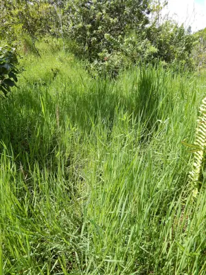

pranet · 出典付きの植物図鑑
African couchgrass
Digitaria abyssinica (Hochst. ex A.Rich.) Stapf · Poaceae

Digitaria abyssinica, the East African couchgrass, is a species of flowering plant in the family Poaceae. It is native to Sub‑Saharan Africa, Madagascar, many of the Indian Ocean islands, the Arabian Peninsula, Sri Lanka, Peninsular Malaysia, Vietnam, New Guinea, and Queensland in Australia, and it has been introduced to scattered locations in Central America and northern South America, and to Saint Helena. Although it is a livestock forage, albeit a low‑quality one, it is generally considered a noxious weed.
出典: Wikipedia (en): Digitaria abyssinica · CC BY-SA 4.0
異名: Dichanthium scalarum (Schweinf.) Gilliland, Digitaria ciliaris Vanderyst, Digitaria effusa Veldkamp, Digitaria eichingeri Mez, Digitaria hackelii Stapf, Digitaria hentyi Veldkamp, Digitaria lemeeana A.Camus, Digitaria merkeri Mez, Digitaria mutica Rendle, Digitaria scalarum (Schweinf.) Chiov., Digitaria somalensis Chiov., Digitaria tangaensis Henrard, Digitaria vestita Fig. & De Not., Panicum abyssinicum Hochst. ex A.Rich., Panicum hackelii Pilg., Panicum kafuroense K.Schum., Panicum kafuroensis K.Schum., Panicum muticum Link, Panicum scalarum Schweinf., Syntherisma abyssinica (Hochst. ex A.Rich.) Newbould
同定や利用は自己責任でお願いします。この図鑑だけを根拠に野生の植物を食べないでください。
出典
- 学名: World Flora Online Plant List 2026-06 · CC0 1.0
- 名前: Wikipedia の記事名と Wikidata · CC0 1.0（Wikidata）。記事名は事実
- 説明: Wikipedia (en): Digitaria abyssinica · CC BY-SA 4.0
- 食用・毒性: World Checklist of Useful Plant Species (Diazgranados et al. 2020, RBG Kew) · CC BY 4.0
- 分布: World Checklist of Vascular Plants (WCVP), RBG Kew, version 2026-06-04 · CC BY 3.0
このページは pranet のデータから自動生成しています。コードは MIT、データは項目ごとのライセンス（説明）。